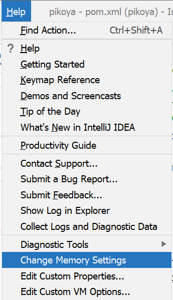
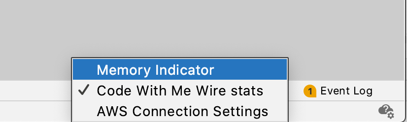

I'm using IDEA 12 Leda on Mountain Lion. I wanted to increase the maximum
memory that IDE can use. I set the VMOptions in Info.plist file to be
-Xmx2048m -ea -XX:+HeapDumpOnOutOfMemoryError -Xverify:none
-Xbootclasspath/a:../lib/boot.jar
When I open up IDEA, I still see the maximum memory to be 711m.
jps -v shows my VMOptions has been loaded but it's replaced by the following
options.
29388 **-Xmx2048m** -ea -XX:+HeapDumpOnOutOfMemoryError -Xverify:none -Xbootclasspath/a:../lib/boot.jar -Xms128m **-Xmx800m** -XX:MaxPermSize=350m -XX:ReservedCodeCacheSize=64m -XX:+UseCodeCacheFlushing -XX:+UseCompressedOops -Didea.paths.selector=IdeaIC12 -Dsun.java2d.noddraw=true -Didea.max.intellisense.filesize=2500 -Didea.dynamic.classpath=false -Didea.jars.nocopy=false -Dsun.java2d.d3d=false -Dapple.awt.fullscreencapturealldisplays=false -Dapple.laf.useScreenMenuBar=true -Djava.endorsed.dirs= -Dswing.bufferPerWindow=false -Didea.fatal.error.notification=enabled -Didea.cycle.buffer.size=1024 -Didea.popup.weight=heavy -Didea.xdebug.key=-Xdebug -Dapple.awt.graphics.UseQuartz=true -Dsun.java2d.pmoffscreen=false -Didea.no.launcher=false -DCVS_PASSFILE=~/.cvspass -Didea.use.default.antialiasing.in.editor=false -Dcom.apple.mrj.application.live-resize=false -Didea.smooth.progress=false
29392 Jps -Dapplication.home=/System/Library/Java/JavaVirtualMachines/1.6.0.jdk/Contents/Home -Xms8m
Where does -Xmx800 come from? I need to remove it.
Answer
Current version: Help | Change Memory Settings:

Since IntelliJ IDEA 15.0.4 you can also use: Help | Edit Custom VM
Options...:
This will automatically create a copy of the .vmoptions file in the config
folder and open a dialog to edit it.
Older versions:
IntelliJ IDEA 12 is a signed application, therefore changing options in
Info.plist is no longer recommended, as the signature will not match and you
will get issues depending on your system security settings (app will either
not run, or firewall will complain on every start, or the app will not be able
to use the system keystore to save passwords).
As a result of addressing IDEA-94050 a new way to supply JVM options was
introduced in IDEA 12:
Now it can take VM options from
~/Library/Preferences/<appFolder>/idea.vmoptions and system properties
from ~/Library/Preferences/<appFolder>/idea.properties.
For example, to use -Xmx2048m option you should copy the original
.vmoptions file from /Applications/IntelliJ IDEA.app/bin/idea.vmoptions to
~/Library/Preferences/IntelliJIdea12/idea.vmoptions, then modify the -Xmx
setting.
The final file should look like:
-Xms128m
-Xmx2048m
-XX:MaxPermSize=350m
-XX:ReservedCodeCacheSize=64m
-XX:+UseCodeCacheFlushing
-XX:+UseCompressedOops
Copying the original file is important, as options are not added , they
are replaced.
This way your custom options will be preserved between updates and application
files will remain unmodified making signature checker happy.
Community Edition : ~/Library/Preferences/IdeaIC12/idea.vmoptions file
is used instead.
Suggest
[Updated Aug 2021 since the JetBrains UI has changed]
Helpful trick I thought I'd share on this old thread.
You can see how much memory is being used and adjust things accordingly using
the Memory Indicator
Right click in the bottom most taskbar area and select the Memory Indicator
item

It shows up in the lower right of the window.